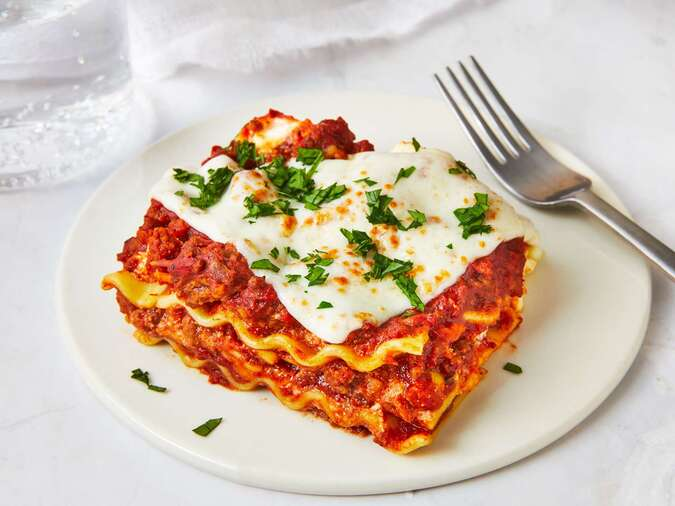

Homemade Lasagna is a family favorite and a great way to feed a crowd.
In this classic lasagna recipe, sheets of pasta are layered with a cheesy filling, a rich meaty tomato sauce, and more cheese and then baked until bubbly and browned.
While there are a few steps, this lasagna recipe is relatively easy to make and has so much flavor.
- Cheese Filling
- Meat
- Sauce
- Spinach (variation)
- Boil pasta: In a large pot of salted water boil lasagna noodles per the recipe below.
- Prepare meat sauce: Cook sausage and beef with onion and garlic. Drain well, add the pasta sauce & simmer it for a few minutes to thicken.
- Combine cheese mixture: Stir the cheese mixture together in a bowl.
- Layer & bake: Layer the meat sauce and cheese mixture with lasagna noodles and bake until the top of the lasagna is golden brown.